五年计划
规划国民经济发展远景的目标和方向。
"每一段征程的结束，都意味着新征程的开始，正是前后相续的奋斗连接成我们前行的历史道路。"
领中国人民彻底改变自己命运和国家面貌的一代伟人
“为党献身常汲汲，与民谋利更孜孜。”
通过红色资源的使用和宣传，传承革命文化，实现党性教育功能。
"把红色资源利用好、把红色传统发扬好、把红色基因传承好。"
规划国民经济发展远景的目标和方向。
"每一段征程的结束，都意味着新征程的开始，正是前后相续的奋斗连接成我们前行的历史道路。"
党员是中国人口的核心组成部分，大多处于领导地位，
党员作为人民群众中的先锋队、战斗队，党员的先锋模范带头作用极为重要。
党代会是党内各方面代表的大聚会，是代表们展现性情和才智的大舞台。
不了解中国共产党，就无法了解近现代以来的中国；不了解历次党代会，就无法了解中国共产党
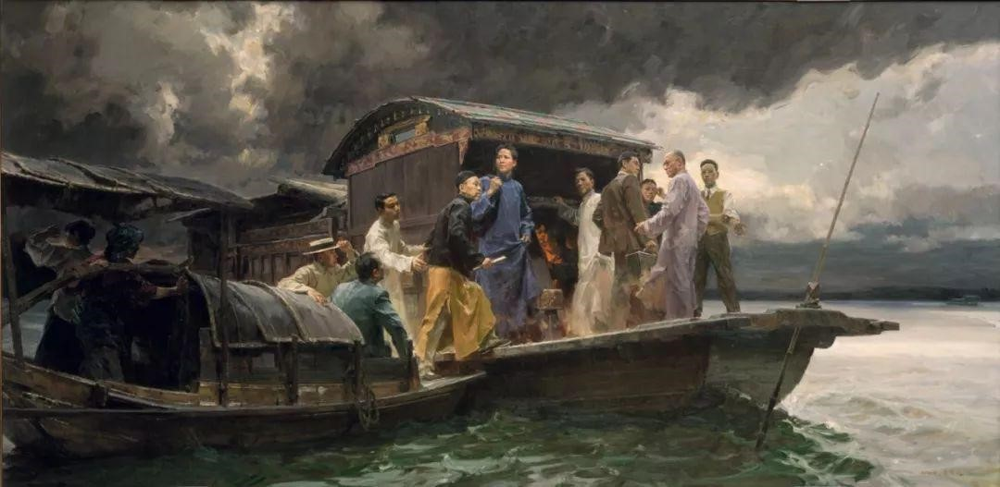
中国共产党第一次全国代表大会在上海法租界望志路106号（今兴业路76号）秘密召开。
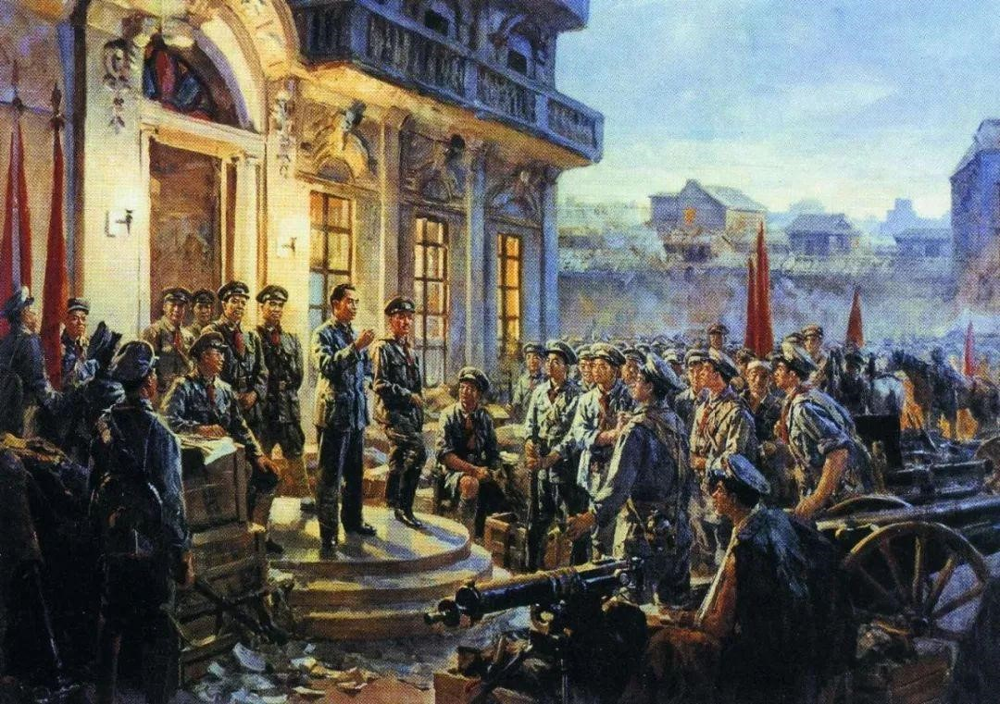
8月1日2时，在周恩来、贺龙、叶挺、朱德、刘伯承的领导下，南昌起义开始。
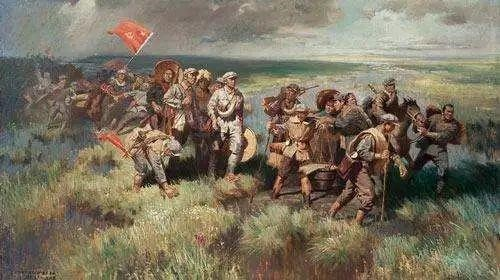
第五次反围剿失败后，中央主力红军为摆脱国民党军队的包围追击，被迫实行转移，退出中央根据地，进行长征。
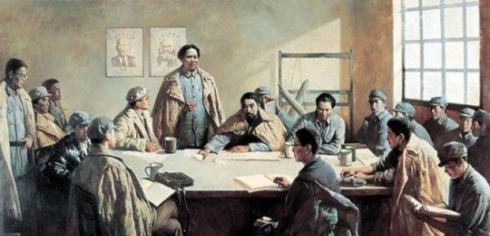
遵义会议是指中共中央政治局在贵州遵义召开的独立自主地解决中国革命问题的一-次极其重要的扩大会议。
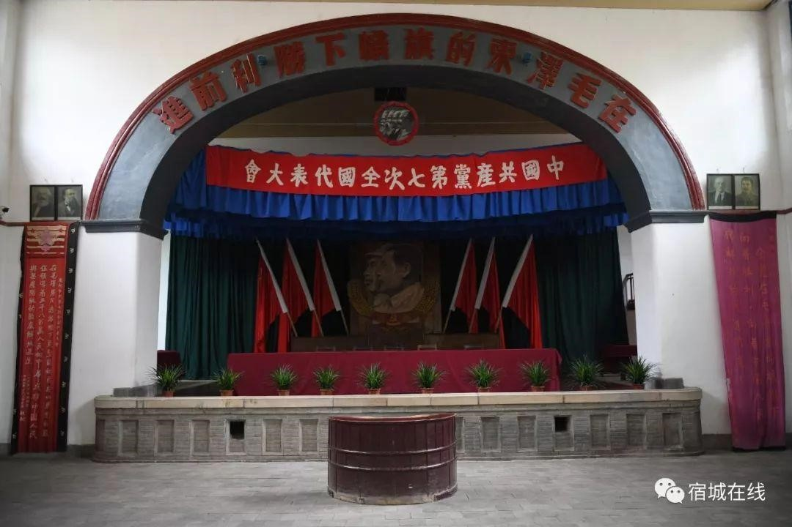
党的七大对三大作风作了理论上的全面概括。中国共产党的三大作风，理论联系实际的作风；和人民群众紧密联系在一起的作风；批评与自我批评的作风。
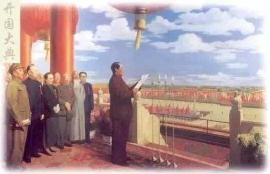
10月1日，中华人民共和国成立。下午3时，首都30万人聚集在天安门广场，隆重举行开国大典。
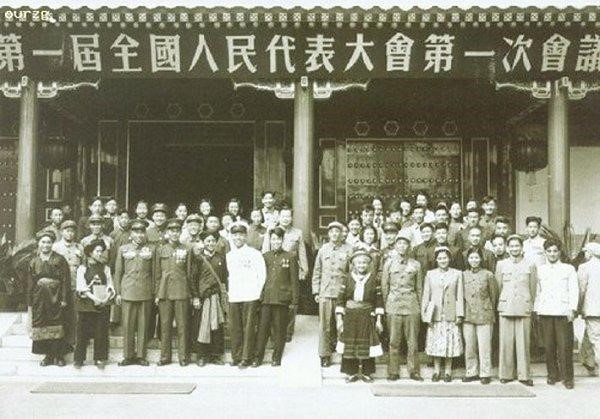
第一届全国人民代表大会选举或决定产生的中华人民共和国第一届国家主席为毛泽东，第一届常务委员会委员长为刘少奇，第一届国务院总理为周恩来。
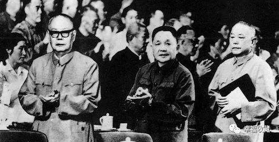
中国共产党第十一届中央委员会第三次全体会议于12月18日至22日在北京举行。全会的中心议题是讨论把全党的工作重点转移到社会主义现代化建设上来。
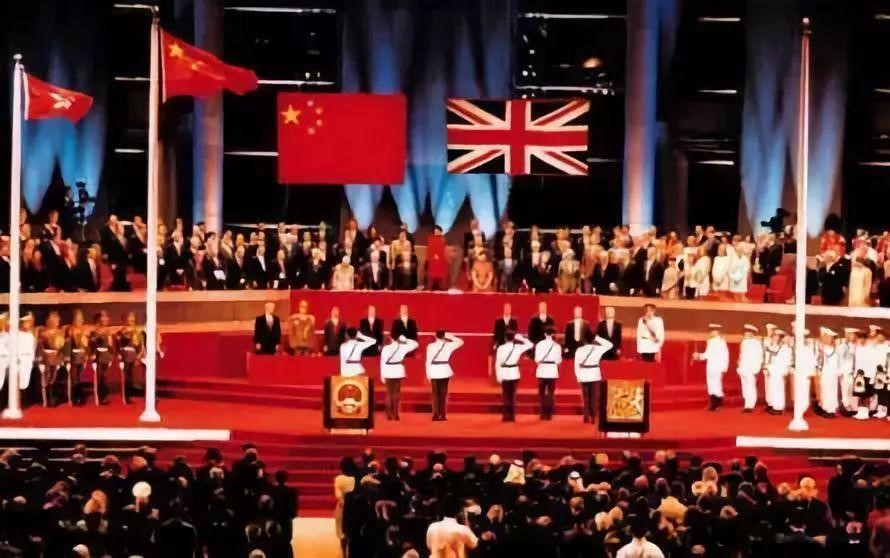
6月30日午夜至7月1日凌晨，香港会议展览中心新翼灯火辉煌，举世瞩目的中英两国政府香港政权交接仪式在这里的五楼大会堂隆重举行。
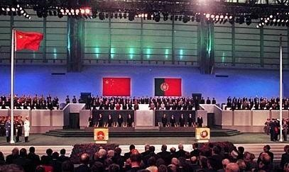
12月20日零时，中华人民共和国和葡萄牙共和国两国政府在澳门文化中心举行政权交接仪式。
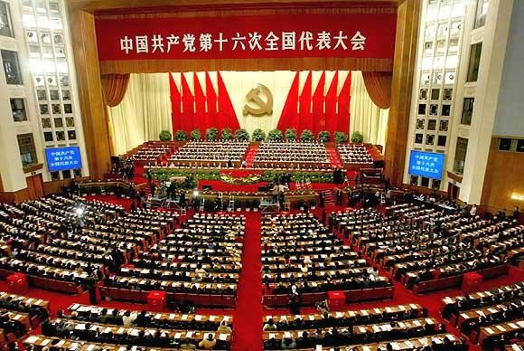
党的十六大，是中国共产党在新世纪召开的第一次全国代表大会，也是在我国进入全面建设小康社会、加快推进社会主义现代化的新的发展阶段召开的一次十分重要的代表大会。
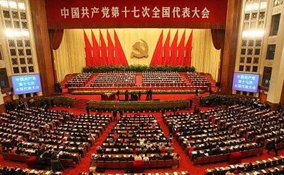
第十七次全国代表大会于10月15日至21日在北京召开。
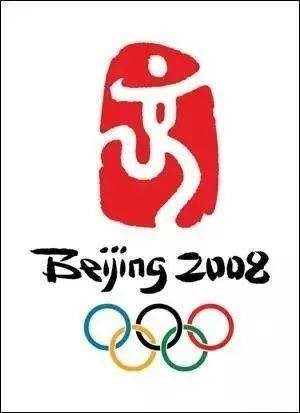
北京奥运会火炬接力活动的主题是“和谐之旅”，以“点燃激情 传递梦想”（Light the Passion Share the Dream）为口号。
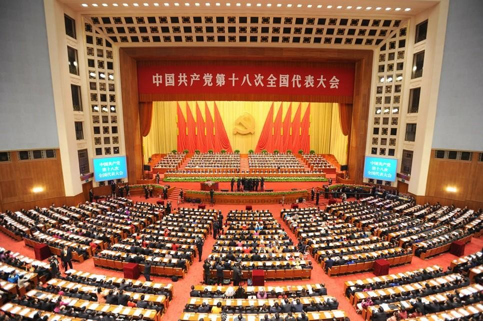
11月8日9:00在人民大会堂大礼堂举行。大会选举了新一届的中共中央领导层，包括中央委员会委员、中央候补委员、中央纪律检查委员会委员。
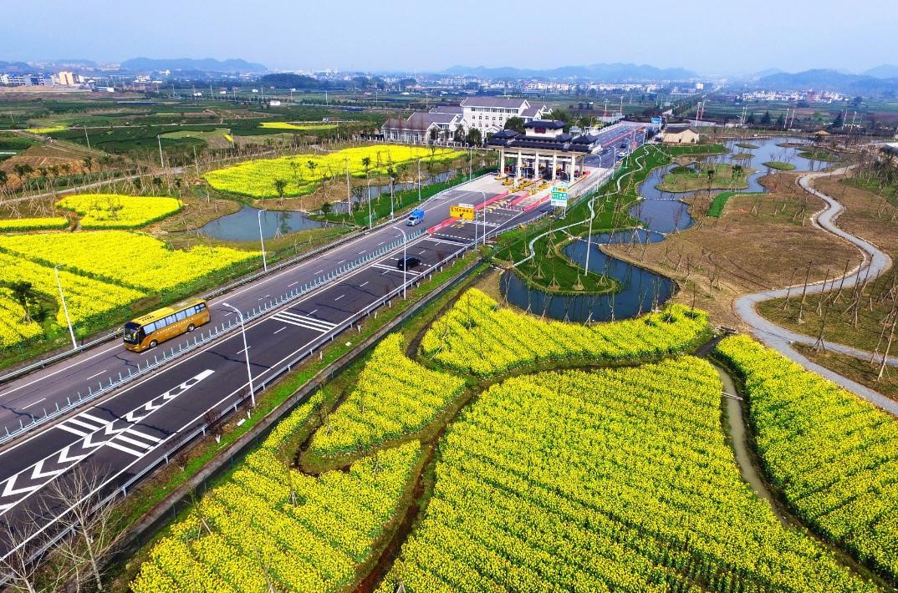
习近平说，从现在到二〇二〇年，是全面建成小康社会决胜期。